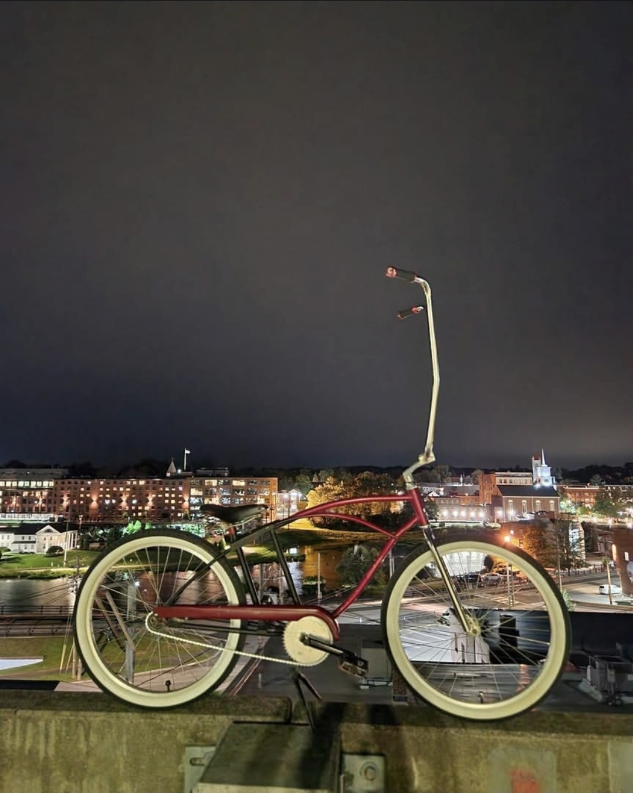
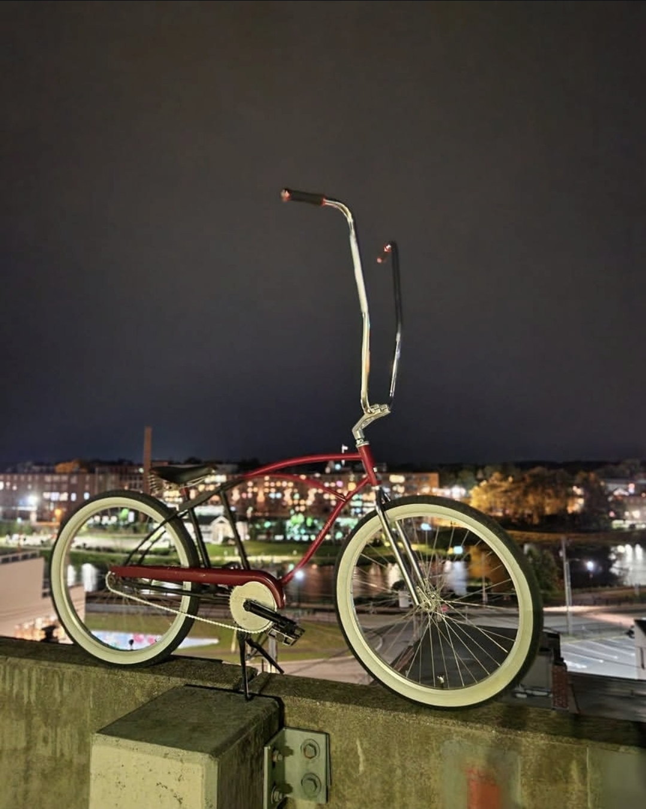

This is not a fake lifestyle page. This is not borrowed nostalgia. This is a website built by a rider, for riders. Real bikes. Real streets. Real miles. Real Southern New Hampshire nights.
Gate City Nights is the moving side of Pedal Forever — downtown Nashua, parking garages, bridges, mills, river paths, gas stations, wet pavement, late rides, and one-of-one photographs from the actual places these bikes travel through.
The bikes do not get thrown in a truck just to look cool somewhere. They ride out from the house. They cross town. They climb parking garages. They make it there under human power.
Preserved bikes still have to move. That is the point.


Pedal Forever is built from the central hub of the city — close enough to ride into the mills, over the bridges, through downtown, and back home again. Every photograph here is part of that proof.
Not staged. Not rented. Not pretending. Just rider-built documentation of the places, machines, and bad decisions that kept the wheels turning after dark.
Back To The Garage